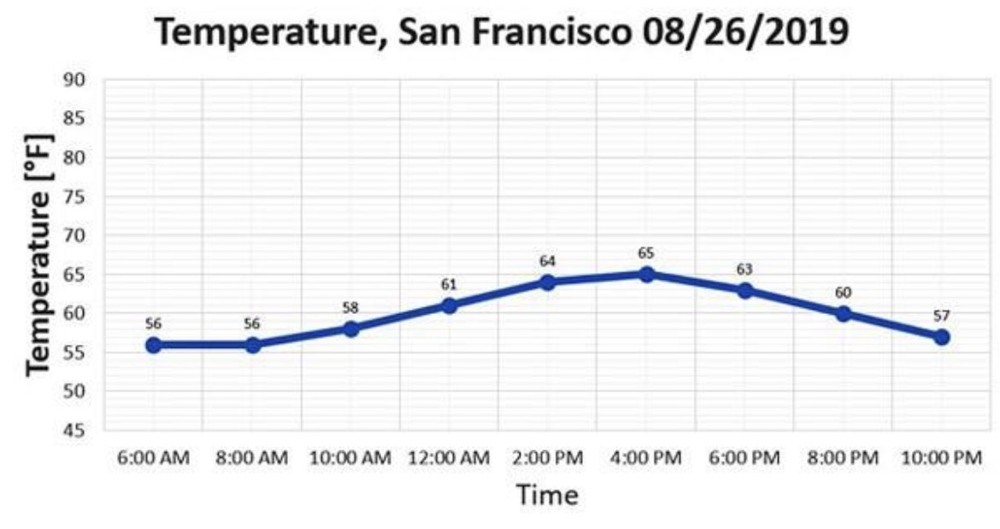

Step one
Observe the Curves
Four fields. Four real situations. Study the original graphs carefully. Use the actual values and axis labels visible in each screenshot. Do not estimate values that cannot be read.

01 — HEALTH
Growth and health measurements.
Source: Original health graph screenshot — PMC publication. Refer to the source shown on the original graph.

02 — WEATHER
Temperature and weather changes.
Source: Original weather graph screenshot — weather.gov. Refer to the original graph for its exact source.

03 — ECONOMY
Economic measurements over time.
Source: Federal Reserve Economic Data (FRED), as identified in the original screenshot.

04 — SPORT
Sports performance and measurements.
Source: See the original sports graph screenshot and its source note.
Observation reminder
Always read the two axes, their quantities and units. A point must be interpreted using both coordinates, not just one number.
Always read the two axes, their quantities and units. A point must be interpreted using both coordinates, not just one number.
Questions to investigate
- What field does the curve belong to, and what is its title?
- What quantity and unit are shown on the horizontal axis?
- What quantity and unit are shown on the vertical axis?
- What does this curve show?
- Choose a point, write its coordinates and explain what it shows.
- Where does the curve go up? Where does it go down?
- What are its biggest and smallest values?
- What real-life decision can this curve help us make?